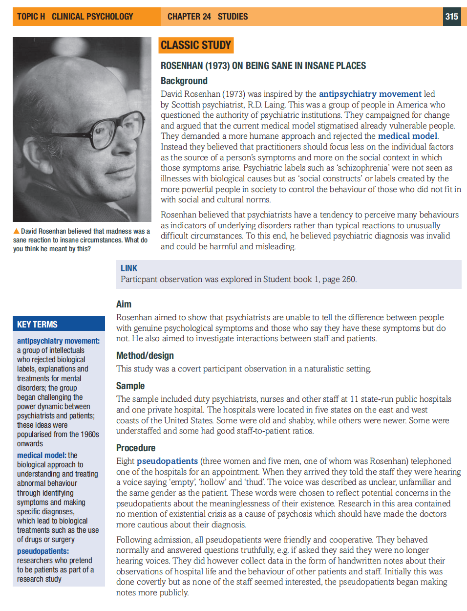
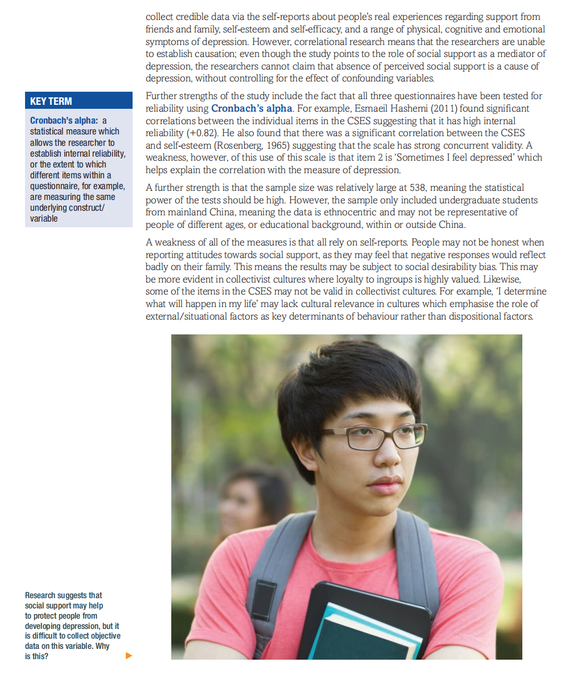
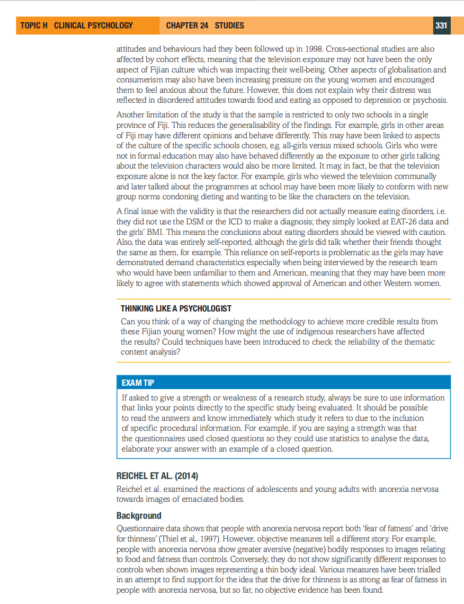
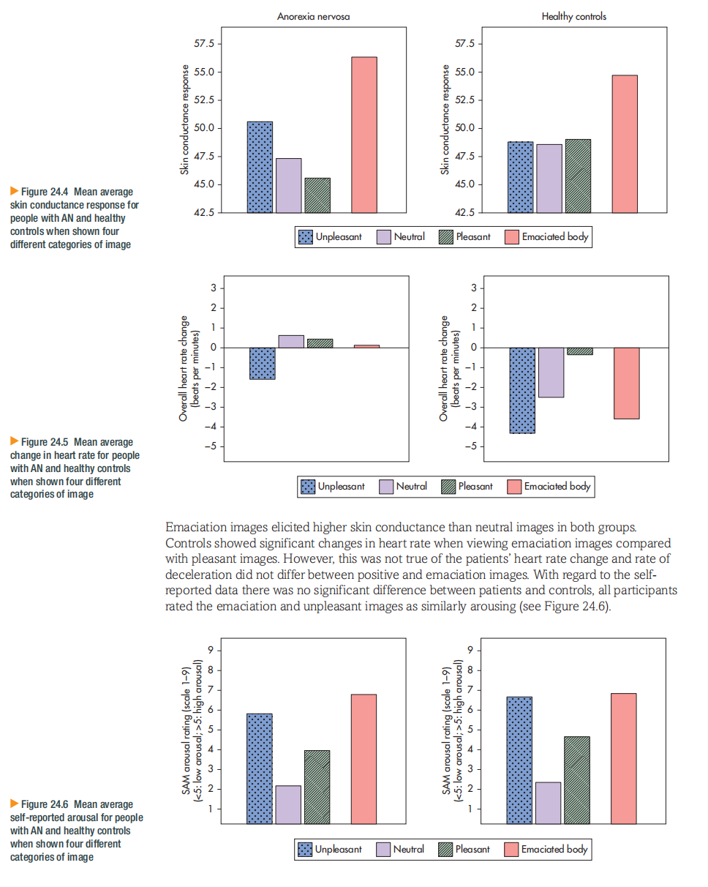

🧪 CHAPTER 24: STUDIES IN CLINICAL PSYCHOLOGY
临床心理学研究
1. Learning Objectives（学习目标）
⚡ Quick Summary — 本节要学什么
This chapter is different from Chapter 22 and 23. Those chapters taught you theories (what causes depression / anorexia). This chapter teaches you studies — real research that psychologists actually carried out. You will meet one classic study and four contemporary studies, each using a different research method.
🎯 By the end of this chapter, you should be able to:
- Describe Rosenhan's (1973) classic study On Being Sane in Insane Places — aim, method, procedure, results and conclusions
- Evaluate Rosenhan's study, including the reactions of Spitzer, Lando and Slater
- Describe and evaluate Suzuki et al. (2014) — a study of biomarkers in schizophrenia
- Describe and evaluate Hans & Hiller (2013) — a meta-analysis of depression treatment effectiveness
- Describe and evaluate Ma, Quan & Liu (2014) — a correlational study of self-esteem, social support and depression in Chinese students
- Describe and evaluate Becker et al. (2002) — a naturalistic study of TV and eating disorders in Fiji
- Describe and evaluate Reichel et al. (2014) — an experiment on startle reflex in anorexia
2. Getting Started — A Lived Experience（真实经历）
Eleanor Longden was a university student. One day, while she was reading in her room, a calm voice suddenly said: "Listen, she is going to jump out of the window." In the textbook, this voice is printed in green capital letters — you cannot miss it.
The voice sounded like a narrator of her life — like a sports commentator describing what she was doing. At first it was neutral and harmless. But after a psychiatrist told her she had schizophrenia（精神分裂症）, and described the illness as a life sentence of decline, the voice became hostile and frightening.
Longden later became a psychologist herself. Her story shows how a diagnosis can change a person's experience of their own symptoms — the label itself can make things worse.
打个比方：就像一个人本来只是有点咳嗽，但医生说"你得了绝症"之后，他吓得整夜睡不着，咳嗽反而更严重了。诊断标签本身可能成为病情恶化的一部分——这正是 Rosenhan 研究要探讨的核心问题。
3. Classic Study: Rosenhan (1973) ⭐
On Being Sane in Insane Places（在疯狂之地保持理智）
⚡ Quick Summary — 30 秒看懂这个研究
- 8 个正常人假装听到声音，混进了 12 家精神病医院
- 他们全部被诊断为精神分裂症并收治入院
- 入院后他们表现完全正常，但平均住了 19 天才被放出
- 出院诊断是"精神分裂症缓解期"——没有一个人被认为是"从来没病"
- 结论：精神病学诊断不可靠，医院无法区分正常人和病人；"病人"标签会扭曲工作人员看到的一切

Background and Aim（背景与目的）
In the early 1970s, psychiatry was under attack. Critics said psychiatric diagnoses were unscientific（不科学的） — they told you more about the hospital's expectations than about the patient. David Rosenhan, a Stanford psychologist, asked a brutal question: can psychiatrists actually tell the difference between a sane person and an insane one?
打个比方：这就像派"卧底"去测试一家公司的安检——如果假员工能轻松混进去还领了工牌，说明这家公司的身份验证系统有问题。
Method（研究方法）
Covert（隐蔽的） = the researchers hid their true identity. Participant observation（参与观察） = the researchers joined the group they were studying, experiencing hospital life as "patients".
Sample and Design（样本与设计）
| Item | Detail |
|---|---|
| Pseudopatients（假病人） | 8 people (including Rosenhan himself — 3 women and 5 men: psychologists, a psychiatrist, a paediatrician, a housewife, a painter and a graduate student) |
| Hospitals（医院） | 12 hospitals in 5 different states of the USA — old and new, well-funded and poorly funded, one private hospital, one staffed by university researchers |
| Design | Each pseudopatient made one phone call to a hospital, asking for an appointment. At the interview they claimed to hear voices. |
Procedure（研究程序）
- Each pseudopatient telephoned a hospital for an appointment, saying they heard voices — an unfamiliar voice of the same sex saying words like "empty", "hollow" and "thud"（"空虚""空洞""咚"声）.
- Apart from this single symptom, they answered all questions honestly and truthfully. They gave their real names, real biographies, real life histories.
- Every single one was admitted to hospital. All but one were diagnosed with schizophrenia（精神分裂症）.
- Once inside, the pseudopatients stopped reporting any symptoms and behaved completely normally.
- They took notes on life in the hospital — at first secretly, then openly when they realised nobody cared (staff interpreted the note-taking itself as a symptom of "writing behaviour").
- They had agreed to get out by cooperating, taking medication (pocketed, not swallowed), and saying they felt fine.
Results（结果）
| Finding | Detail |
|---|---|
| Length of stay（住院时长） | 7 to 52 days; average 19 days |
| Release diagnosis（出院诊断） | "Schizophrenia in remission"（精神分裂症缓解期）— nobody was recorded as sane |
| Medication（药物） | Pseudopatients received a total of 2,100 pills (none swallowed — pocketed instead) |
| Who saw through them（谁识破了他们） | Not the staff — but some real patients suspected them: 35 of 118 patients made remarks like "you're not crazy, you're a journalist or a professor" |
| Staff contact（医患互动） | Staff avoided patients; psychiatrists came onto wards only rarely; nurses stayed in glassed-off offices |
| Normal behaviour misread（正常行为被误读） | Queuing early for lunch = "oral-acquisitive nature of the syndrome"; writing notes = pathological "writing behaviour"; pacing the corridors out of boredom = symptom |
打个比方：这就像一个人被贴上"小偷"标签之后，他摸口袋是"在偷东西"，他看别人是"在踩点"，他帮助别人也被解读为"作秀"。标签像一副有色眼镜——戴上之后看到的一切都变了颜色。
Conclusions（结论）
- Psychiatric hospitals cannot distinguish the sane from the insane in this setting.
- Diagnosis is unreliable（不可靠） and sticky — once labelled, the label "sticks" and every behaviour is interpreted through it. This is called stickiness of the label（标签的粘性）.
- Hospitals are experienced as depowering（剥夺权力感的） environments — patients lose dignity, privacy and any sense of control.
4. Evaluating Rosenhan — Critics Respond（批评者的回应）
⚡ Quick Summary — 三个批评者 + 一个毛利视角
- Spitzer：假病人说"听到声音"本身就是装病症状，医生没有做错
- Lando：住院期间可能真的有精神问题，医院让他们缓解期出院反而说明医院"起作用了"
- Slater：2004 年重复实验发现医生没那么好骗，开了安抚剂和门诊转诊
- te whare tapa whā：毛利文化认为健康需要四个支柱平衡，诊断必须考虑文化背景
Critic 1: Robert Spitzer（斯皮策）
Spitzer argued the pseudopatients did have a symptom when they arrived — they claimed to hear voices. Hearing voices is a genuine symptom of mental disorder, so doctors were right to admit them. The failure would only exist if the hospitals failed to detect sane behaviour after admission — but since the pseudopatients arrived with a real complaint, the diagnosis was not actually wrong.
Spitzer also noted that doctors are trained to believe patients' self-reports. A doctor who ignores a patient claiming to hear voices could face tragic consequences. The "fraud" was on the pseudopatients' side, not the hospitals'.
Critic 2: Henry Lando（兰多）
Lando raised two points:
- The pseudopatients may have genuinely been mentally distressed at the time of admission — volunteering for a fake-patient experiment is itself an unusual act.
- Far from showing failure, the hospitals did their job well: they treated the patients, and released them when the symptoms improved — an average of 19 days later with a diagnosis of "in remission", which is exactly what a functioning hospital should do.
Critic 3: Lauren Slater（斯莱特，2004）
Slater repeated a version of the experiment for her book Opening Skinner's Box. She presented herself at psychiatric hospitals claiming to hear the word "thud". She was never admitted — doctors gave her prescriptions or referrals, and most diagnosed her with depression with psychotic features or "anxiety", not schizophrenia. Slater argued that modern psychiatry (with DSM-IV criteria) is more cautious than in Rosenhan's day.
打个比方：Rosenhan 说"安检系统是坏的"，批评者说：(1) 你递的是假护照，海关放行不能全怪海关；(2) 你进去后很快被放出来，说明系统运转正常；(3) 我们今天再试一次，海关根本不放人了。
Cultural perspective: te whare tapa whā（毛利"四壁之屋"健康观）
In Māori culture (New Zealand), health is like a house with four walls. If any one wall fails, the house falls:
- taha hinengaro — mental/emotional wellbeing (the mind)
- taha tinana — physical wellbeing (the body)
- taha whānau — family and social wellbeing (relationships)
- taha wairua — spiritual wellbeing (the spirit)
From this perspective, a diagnosis must consider all four dimensions. A diagnosis that looks only at symptoms (like hearing voices) ignores family, spirit and cultural context — and can mislabel culturally normal experiences as illness.
🏆 Gold-standard paragraph (use this structure in essays)
A key criticism of Rosenhan's study is that it may be outdated. When Slater (2004) repeated the procedure, claiming to hear the word "thud", she was not admitted to any hospital — doctors offered prescriptions and outpatient referrals instead. This suggests that modern diagnostic systems (DSM-IV and later) are more careful than in 1973, and that Rosenhan's conclusion about the unreliability of diagnosis may not generalise to contemporary psychiatric practice. However, Slater's sample was just one person presenting once, which is far less systematic than Rosenhan's 8 pseudopatients across 12 hospitals, so her refutation is itself limited in reliability.
5. Contemporary Study: Suzuki et al. (2014) ⭐
Biomarkers for Schizophrenia（精神分裂症的生物标记物）
⚡ Quick Summary — 30 秒看懂这个研究
- 研究目的：能不能用血液检查（而不是只靠问诊）来辅助诊断精神分裂症？
- 样本：日本 524 人 — 333 位精神分裂症患者 + 191 位健康对照组
- 方法：横断面研究（cross-sectional），测 BMI 和血液中的 21 种物质（生物标记物）
- 结果：患者组的多巴胺、组胺等显著升高；谷氨酸、精氨酸等显著降低；BMI 更低
- 结论：血液生物标记物有可能帮助诊断，但还不能单独作为诊断工具
Background and Aim（背景与目的）
You learned in Chapter 21 that schizophrenia is currently diagnosed by symptoms (hallucinations, delusions, disorganised speech...). There is no blood test or brain scan that can confirm it. But what if there was? Suzuki and colleagues in Japan wanted to find out whether biomarkers（生物标记物） in the blood differ between people with schizophrenia and healthy people.
A measurable biological substance (for example a chemical in the blood) that indicates a condition. 打个比方：汽车仪表盘上的警告灯——灯亮了说明引擎里某个部件出了问题。生物标记物就是身体里的"警告灯"，通过验血就能"读到"。
Method（研究方法）
Data is collected from different groups of people at one point in time, then compared. 打个比方：像在同一个时间点给三个班级拍"快照"对比成绩，而不是跟踪一个班级三年看它怎么变化。
- Design: cross-sectional, independent groups (patient group vs control group), quasi-experimental（准实验）— the IV (having schizophrenia or not) was not manipulated by the researchers
- Data collected: BMI (body mass index), plus blood samples analysed for 21 metabolites（代谢物） — chemicals such as dopamine, glutamine, histamine and arginine
- Statistics: chi-squared test（卡方检验） for categorical data (e.g. sex distribution) and t-tests/comparison tests for the chemical levels
Sample（样本）
| Group | n | Details |
|---|---|---|
| Schizophrenia patients（患者组） | 333 | Diagnosed with schizophrenia; recruited in Japan |
| Controls（对照组） | 191 | Healthy volunteers, matched as closely as possible |
| Total | 524 | Groups compared on sex distribution using chi-squared |
Results（结果）
| Marker | Patients vs Controls | Direction |
|---|---|---|
| BMI（身体质量指数） | Significantly different | Patients lower BMI |
| Dopamine（多巴胺） | Significant difference | Higher in patients |
| Histamine（组胺） | Significant difference | Higher in patients |
| Glutamine / glutamate（谷氨酰胺/谷氨酸） | Significant difference | Lower in patients |
| Arginine（精氨酸） | Significant difference | Lower in patients |
Overall, 14 of the 21 metabolites plus BMI were significantly different between the two groups — a pattern consistent with the dopamine hypothesis of schizophrenia you met in Chapter 21 (high dopamine) but also revealing other chemical systems (glutamate, arginine-nitric oxide pathways).
Conclusions（结论）
- Blood biomarkers do differ between people with and without schizophrenia.
- Such biomarkers could become a supporting tool for diagnosis — but they are not accurate enough to replace symptom-based diagnosis on their own.
6. Evaluating Suzuki et al. (2014)
⚡ Quick Summary — 评价的四个抓手
- 横断面设计：只有快照，没有因果——不知道是病改变了血液，还是血液差异先于疾病
- 药物混淆：患者都在服抗精神病药，化学差异可能来自药物而不是疾病本身
- 样本量大 + 客观数据：524 人、血液化验客观可重复——这是强项
- 缺少纵向跟踪：没有跟踪高危人群，无法确定标记物的预测力
✅ Strengths（优点）
- Large sample (n=524) increases statistical power and representativeness — conclusions are less likely to be flukes.
- Objective, quantitative data — blood tests are measured by machines, not subjective judgements. High reliability (信度高) — another lab could repeat the assay.
- Matched control group allows a clean comparison — differences can be linked to the illness rather than chance.
- Links biology to diagnosis — supports the biological approach and could reduce stigma ("it is a physical illness like diabetes").
❌ Weaknesses（缺点）
- Cross-sectional design cannot show cause and effect — we do not know whether the illness changed the blood chemicals, or the chemical profile predates and contributes to the illness.
- Confounding medication — patients were taking antipsychotic drugs, which themselves alter dopamine and other metabolites. The "biomarker" differences may partly be drug effects, not illness effects.
- No longitudinal follow-up — we cannot tell if these markers predict who will develop schizophrenia.
- Cultural sampling — all participants were recruited in Japan; biomarker baselines may differ across populations, limiting generalisability（泛化性）.
打个比方：你想比较"感冒的人"和"健康人"的口水成分，但感冒的人都在吃感冒药——你测到的差异到底是感冒造成的，还是药造成的？分不清。
🏆 Gold-standard paragraph
A major weakness of Suzuki et al. (2014) is the cross-sectional design. Because data was collected at a single point in time, the study can only show that patients and controls differ — it cannot establish whether abnormal metabolite levels are a cause or a consequence of schizophrenia, or indeed a side-effect of antipsychotic medication that all patients were taking. This weakens the study's validity as a basis for diagnosis. A stronger design would be longitudinal, tracking high-risk people before illness onset to see whether the biomarker profile predicts later diagnosis.
7. Contemporary Study: Hans & Hiller (2013)
How Effective Are Depression Treatments? — A Meta-Analysis（抑郁治疗的元分析）
⚡ Quick Summary — 30 秒看懂这个研究
- 问题：治疗抑郁症到底有没有用？哪种疗法最有效？
- 方法：元分析（meta-analysis） — 把 34 个已有研究的数据合并起来一起分析
- 比较三种疗法：CBT（认知行为疗法）、药物治疗、联合治疗（CBT + 药物一起用）
- 结果：三种疗法都有效；联合治疗效果最好，尤其对更严重的抑郁
- 结论：元分析是回答"哪种疗法最好"的有力工具，但受限于它包含的研究的质量
Background and Aim（背景与目的）
Chapter 22 taught you that depression can be treated with antidepressant drugs and with CBT. But which works better? Do they work better together? Individual studies give conflicting answers — some find drugs better, some find CBT better. Hans and Hiller wanted to settle the question by combining the results of many studies into one large-scale analysis.
A statistical technique that combines the results of many separate studies on the same question into one overall conclusion. 打个比方：一个评委只看一场比赛可能判断失误；元分析就像把 34 位评委的打分汇总起来算总分——样本更大、结论更稳。
Method and Sample（方法与样本）
| Item | Detail |
|---|---|
| Design | Meta-analysis of published randomised controlled trials (RCTs) |
| Number of studies | 34 studies |
| Participants | 1,880 "completers"（完成全部治疗的人）+ 1,629 in intention-to-treat (ITT) analysis |
| Treatments compared | CBT alone vs antidepressant medication alone vs combined CBT + medication |
| Outcome measures | Effect sizes (how big the improvement is, not just whether it is statistically significant) |
Analyse participants in the group they were originally assigned to, even if they dropped out or switched treatment. 打个比方：分班之后有学生转学、退学，统计成绩时仍然按"最初分到的班"来算——这样才公平地反映每种"分班方式"的真实效果。
Results（结果）
- All three treatments produced significant improvement compared with control conditions.
- Combined treatment (CBT + medication) showed the largest overall effect — particularly for more severe and chronic depression.
- CBT alone and medication alone were broadly comparable in effectiveness for many patients.
- The researchers used a funnel plot（漏斗图） to check for publication bias.

Journals prefer to publish positive results ("the treatment worked!") rather than null results ("no difference"). This skews what meta-analyses can see. A funnel plot maps each study's effect size against its precision: a symmetrical funnel suggests no bias; a lopsided funnel with a missing corner suggests some studies never got published. 打个比方：网上购物只看好评不行——差评被删掉的店铺，好评率是虚高的。漏斗图就是检查"差评是不是被删了"的工具。
Conclusions（结论）
- Combined CBT + medication is the most effective treatment option, especially for severe depression.
- Meta-analysis is a powerful way to answer "which treatment works best" questions.
- However, conclusions are only as good as the studies that go into them — garbage in, garbage out.
8. Contemporary Study: Ma, Quan & Liu (2014)
Self-Esteem, Social Support and Depression in Chinese Students（中国学生的自尊、社会支持与抑郁）
⚡ Quick Summary — 30 秒看懂这个研究
- 问题：自尊和社会支持怎么影响中国大学生的抑郁？
- 方法：相关研究（correlational） — 538 名中国大学生填三份问卷
- 三份量表：CSES（自尊量表）+ MSPSS（社会支持量表）+ Zung SDS（抑郁量表）
- 关键结果：自尊与抑郁 r = −0.636（强负相关）；社会支持通过自尊起部分中介作用（partial mediation，间接效应 −0.18）
- 结论：社会支持高 → 自尊高 → 抑郁低；但相关研究不能确立因果
Background and Aim（背景与目的）
Chapter 22 showed you Beck's cognitive theory: low self-esteem and negative thinking are linked to depression. But where does self-esteem come from? One idea is that social support (feeling supported by family and friends) protects self-esteem, and self-esteem in turn protects against depression. Ma, Quan and Liu tested this chain in a Chinese sample — important because most depression research uses Western participants.
Method（研究方法）
Measures two or more variables as they naturally occur and tests whether they move together. No variable is manipulated, so no cause-and-effect conclusions are possible. 打个比方：发现"冰淇淋销量高的时候溺水事故也多"——两者相关，但不是冰淇淋导致溺水（其实是夏天气温高导致两者都多）。
- Design: correlational, using standardised questionnaires (self-report)
- Statistics: Pearson's correlation coefficients, then mediation analysis
Sample（样本）
| Item | Detail |
|---|---|
| Participants | 538 Chinese university students |
| Measure 1 | CSES — Rosenberg-type Collective Self-Esteem Scale（自尊量表） |
| Measure 2 | MSPSS — Multidimensional Scale of Perceived Social Support（社会支持量表：家人、朋友、重要他人） |
| Measure 3 | Zung SDS — Self-Rating Depression Scale（抑郁自评量表） |
Results（结果）
| Relationship | Result | Meaning |
|---|---|---|
| Social support ↔ depression | significant negative correlation | More support, fewer depressive symptoms |
| Self-esteem ↔ depression | r = −0.636 | Strong negative correlation — higher self-esteem, lower depression |
| Social support → self-esteem → depression | Indirect effect −0.18 | Partial mediation — self-esteem is one pathway, but not the only one |
Variable M mediates the link between A and B if A affects M, and M in turn affects B. In this study: social support (A) → self-esteem (M) → depression (B). It is partial because social support also affects depression through other routes (direct effect still exists). 打个比方：妈妈的鼓励（A）让孩子更自信（M），自信的孩子考试成绩更好（B）。鼓励也可能直接通过"陪读"影响成绩——所以自信只是部分中介。
Conclusions（结论）
- Self-esteem is strongly and negatively related to depressive symptoms in Chinese students.
- Perceived social support protects mental health partly by boosting self-esteem.
- Interventions that build social support and self-esteem may help prevent student depression — but causal claims need experimental evidence.
9. Contemporary Study: Becker et al. (2002)
Eating Disorders in Fiji — Before and After Television（斐济：电视进驻前后的进食障碍）
⚡ Quick Summary — 30 秒看懂这个研究
- 独特机会：斐济 1995 年才有电视——天然的"前后对比"实验室
- 1995 年（电视来之前）采访 63 名女学生，1998 年（电视来之后）再采访 65 名
- 用 EAT-26 量表测进食障碍态度 + 半结构访谈 + 主题分析
- 结果：高危 EAT-26 得分从 12.7% → 29.2%；自我催吐从 0% → 11.3%
- 结论：西方媒体形象是进食障碍上升的重要社会文化因素
Background and Aim（背景与目的）
Fiji is a Pacific island nation where, traditionally, a larger body was admired — it signified prosperity, family care and good health. Dieting was almost unknown. Then, in 1995, television arrived (Western channels like Friends and Beverly Hills 90210). Anne Becker, a psychiatrist who had worked in Fiji for years, realised this was a rare natural experiment: what happens to adolescent girls' body image when Western media suddenly appears?
Method（研究方法）
- Design: naturalistic / quasi-experimental（自然实验/准实验）— the researchers did not introduce TV; they compared samples before (1995) and after (1998) TV arrived
- Participants: ethnic Fijian secondary school girls — 63 in 1995, 65 in 1998 (aged 15–20 approximately)
- Measures:
- EAT-26 (Eating Attitudes Test, 26 items) — a standardised questionnaire; high scores (≥20) indicate risk of eating disorder（进食态度测验）
- Semi-structured interviews（半结构访谈） — open questions about body image, dieting and TV viewing
- Weight and height measured
- Analysis: quantitative comparison of EAT-26 scores between 1995 and 1998 + thematic analysis（主题分析） of interview transcripts
A qualitative method: read the interview transcripts repeatedly, code recurring ideas, and group codes into themes (overlapping patterns of meaning). 打个比方：读完全班同学的意见反馈，把提到"作业太多"的句子都贴上同一个标签——那个标签就是一个"主题"。
Results（结果）
| Indicator | 1995 (before TV) | 1998 (after TV) |
|---|---|---|
| High-risk EAT-26 scores (≥20) | 12.7% (n=63) | 29.2% (n=65) |
| Self-induced vomiting（自我催吐） | 0% | 11.3% |
| Girls reporting dieting to lose weight | rare | much more common |

Interview themes revealed why: girls explicitly said they wanted to look like Western TV characters, believing thinness brought status and opportunities. Some felt shame about their bodies after watching. Thematic analysis also found that girls from households owning a TV, and girls who felt more "competing" pressure, showed higher risk.
Conclusions（结论）
- Western media exposure is a powerful sociocultural factor（社会文化因素） in the rise of eating-disorder attitudes and behaviours, even in a culture that traditionally valued larger bodies.
- Supports the social learning theory view of anorexia (Chapter 23) — girls model themselves on admired TV figures.
10. Contemporary Study: Reichel et al. (2014)
Startle Reflex and Cachexia in Anorexia Nervosa（厌食症的惊跳反射与恶病质意象）
⚡ Quick Summary — 30 秒看懂这个研究
- 问题：厌食症患者看到瘦削身体图片时的生理反应和常人不同吗？
- 样本：36 位厌食症患者 vs 36 位健康对照（奥地利）
- 方法：实验室实验 — 看三类图片（恶病质瘦/正常体重/超重），同时测 EMG、皮肤电、心率
- 结果：患者组看到恶病质图片时惊跳反应减弱、对瘦的意象反应异常——提示"瘦"对她们不是威胁
- 结论：生理指标揭示了厌食症患者对"极度消瘦"的独特情绪反应，可辅助诊断与治疗
Background and Aim（背景与目的）
People with anorexia nervosa often say extremely thin bodies look "normal" or even desirable to them. Is this just what they say, or can we detect it in their bodies' automatic reactions? Reichel and colleagues used physiological measures to find out whether patients respond differently to images of emaciated (extremely thin) bodies.
Extreme thinness and muscle wasting. In this study, "cachexia images" are photographs of extremely emaciated bodies. 打个比方：比"瘦"更进一步的、皮包骨的状态。
Method（研究方法）
An automatic, whole-body flinch response to a sudden stimulus (usually a brief loud noise). The reflex is bigger when you are anxious/afraid and smaller when you feel pleasant or calm. 打个比方：深夜一个人走黑巷，突然有人拍你肩膀——你会吓一大跳（惊跳放大）。但如果当时你正在看喜欢的电影、心情放松，同样一拍，你的反应就小得多。Psychologists use this to "read" emotional states the person may not admit to.
- Design: laboratory experiment, independent groups — 36 patients with anorexia vs 36 healthy controls (matched)
- Materials: images of (1) cachectic/extremely thin bodies, (2) normal-weight bodies, (3) overweight bodies
- Physiological measures:
- EMG（肌电图） — electrodes on the face muscles record the startle eye-blink
- Skin conductance（皮肤电反应） — sweat gland activity = emotional arousal
- ECG / heart rate（心电图/心率） — cardiac response
- A startle probe (brief noise) was presented while participants viewed each image type.
Results（结果）
| Measure | Key finding |
|---|---|
| Startle reflex (EMG) | Patients showed attenuated (weaker) startle while viewing cachexia images compared with controls — underactive defensive response to extreme thinness |
| Controls' response | Healthy controls showed stronger defensive reactions (larger startle / arousal) to the same emaciated images |
| Skin conductance & ECG | Pattern of autonomic responding differentiated patients from controls across image categories |

Conclusions（结论）
- Anorexia patients process emaciated body images differently at an automatic physiological level — extreme thinness does not trigger a normal defensive response.
- Physiological measures can reveal attitudes patients cannot (or will not) report — useful for diagnosis and for testing whether treatment changes automatic responses.
11. Checkpoint Questions & Exam Practice（自测与考试练习）
✅ Checkpoint — 先自己填，再对答案
- Rosenhan's study used covert participant observation as its method, with 8 pseudopatients across 12 hospitals.
- The single symptom pseudopatients reported was hearing voices saying the words "empty", "hollow" and "thud".
- The average hospital stay was 19 days, and release diagnosis was "schizophrenia in remission".
- Suzuki et al. compared 333 schizophrenia patients with 191 controls, measuring BMI plus 21 blood metabolites.
- Suzuki's design was cross-sectional, so it cannot establish cause and effect.
- Hans & Hiller combined 34 studies in a meta-analysis, comparing CBT, medication and combined treatment.
- Ma, Quan & Liu found self-esteem correlated with depression at r = −0.636, with self-esteem acting as a partial mediator.
- In Becker's Fiji study, high EAT-26 scores rose from 12.7% to 29.2% after TV arrived.
- Reichel measured the startle reflex using EMG, skin conductance and ECG while patients viewed cachexia images.
📝 Exam Practice — 考试题型实战
Essay structure（16 分论文怎么搭）：
| Paragraph | Content |
|---|---|
| 1. Intro | Define experiment (manipulated IV, controlled DV, causal conclusions). State you will discuss Reichel (experiment) vs Becker (natural experiment) or Ma (correlational). |
| 2. For experiments | Reichel: lab control (standardised images, EMG probes) → objective data, causal claims possible, replicable. |
| 3. Against experiments | Reichel: artificial — viewing pictures ≠ real body-image experience; small sample (36 vs 36); patients' reactions may be caused by the disorder, not causing it. |
| 4. Alternative method | Becker or Ma: natural/correlational designs capture real-world media and social influence with high ecological validity — but sacrifice control and causal certainty. |
| 5. Weigh up | Best method depends on the question: mechanisms (experiment) vs real-life influence (naturalistic). Triangulation across methods (like this chapter shows) gives the strongest clinical evidence. |
| 6. Conclusion | No single 'best' method — clinical psychology progresses by combining experimental control with real-world validity. |
12. Key Terms Glossary（术语表）
| Term | Plain-English meaning（大白话解释） | Used in |
|---|---|---|
| Pseudopatient（假病人） | A healthy person pretending to be a patient to test the hospital | Rosenhan |
| Covert participant observation（隐蔽参与观察） | Researcher secretly joins the group being studied | Rosenhan |
| "In remission"（缓解期） | Symptoms have eased but the diagnosis is not removed — the label sticks | Rosenhan |
| Biomarker（生物标记物） | A measurable body signal (like a blood chemical) that indicates a condition | Suzuki |
| Cross-sectional（横断面） | Snapshot of different groups at one point in time | Suzuki |
| Chi-squared test（卡方检验） | Statistical test for differences in categories (e.g. sex distribution) | Suzuki |
| Meta-analysis（元分析） | Statistically merging many studies' results into one overall answer | Hans & Hiller |
| Intention-to-treat (ITT)（意向治疗分析） | Analyse people in their original group even if they dropped out | Hans & Hiller |
| Publication bias（发表偏倚） | Journals publish positive results more than null results, skewing the literature | Hans & Hiller |
| Funnel plot（漏斗图） | Graph that reveals whether studies are missing due to publication bias | Hans & Hiller |
| Correlation（相关） | Two variables move together — but one does not necessarily cause the other | Ma et al. |
| Mediation（中介作用） | A → M → B: M carries the influence of A onto B | Ma et al. |
| EAT-26（进食态度测验） | 26-item questionnaire; score ≥20 indicates risk of an eating disorder | Becker |
| Thematic analysis（主题分析） | Coding qualitative data into recurring themes | Becker |
| Startle reflex（惊跳反射） | Automatic flinch to a sudden noise; bigger when afraid, smaller when calm | Reichel |
| EMG（肌电图） | Electrodes recording muscle activity — here, the startle eye-blink | Reichel |
| Cachexia（恶病质） | Extreme emaciation / skin-and-bones thinness | Reichel |
💡 一张表记住 5 个研究的方法
| Study | Method | One-line memory hook |
|---|---|---|
| Rosenhan (1973) | Covert participant observation | 8 spies, 12 hospitals, "empty hollow thud" |
| Suzuki (2014) | Cross-sectional (blood biomarkers) | 524 people, 21 chemicals, 14 differ |
| Hans & Hiller (2013) | Meta-analysis | 34 studies merged: CBT + drugs wins |
| Ma et al. (2014) | Correlational questionnaires | Support → self-esteem → less depression (r = −0.636) |
| Becker (2002) | Natural experiment + interviews | Fiji + TV = vomiting 0% → 11.3% |